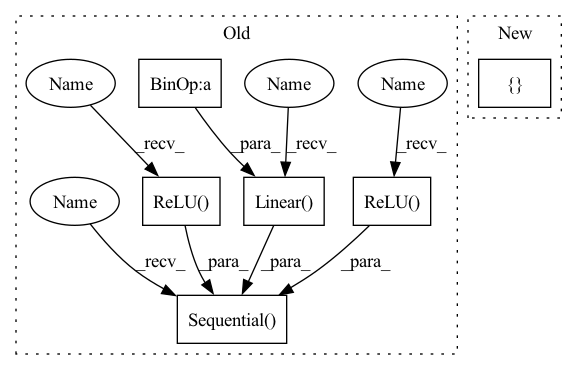

Pattern ID :1194

Before Change
stride=np.array(stride, dtype=np.float32),
)
// noinspection PyUnboundLocalVariable
self.rgb_cnn = nn.Sequential(
nn.Conv2d(
in_channels=self._n_input_rgb,
out_channels=32,
kernel_size=self._cnn_layers_kernel_size[0],
stride=self._cnn_layers_stride[0],
),
nn.ReLU(True),
nn.Conv2d(
in_channels=32,
out_channels=64,
kernel_size=self._cnn_layers_kernel_size[1],
stride=self._cnn_layers_stride[1],
),
nn.ReLU(True),
nn.Conv2d(
in_channels=64,
out_channels=32,
kernel_size=self._cnn_layers_kernel_size[2],
stride=self._cnn_layers_stride[2],
),
// nn.ReLU(True),
nn.Flatten(),
nn.Linear(32 * rgb_cnn_dims[0] * rgb_cnn_dims[1], output_size),
nn.ReLU(True),
)
self.layer_init(self.rgb_cnn)
if self._n_input_depth > 0:
for kernel_size, stride in zip(
After Change
kernel_size=np.array(kernel_size, dtype=np.float32),
stride=np.array(stride, dtype=np.float32),
)
layer_channels = [32, 64, 32]
// noinspection PyUnboundLocalVariable
self.rgb_cnn = make_cnn(
input_channels=self._n_input_rgb,
In pattern: SUPERPATTERN
Frequency: 3
Non-data size: 6
Instances
Fragment ID: 3404339
Project Name: allenai/allenact
Commit Name: ce6f216b3b535e9f7730dd3ea153f8f86c2c9c99
Time: 2020-03-27
Author: jordis@allenai.org
File Name: models/basic_models.py
Class Name: SimpleCNN
Method Name: __init__
Parent Class: nn.Module
Fragment ID: 3404338
Project Name: allenai/allenact
Commit Name: ce6f216b3b535e9f7730dd3ea153f8f86c2c9c99
Time: 2020-03-27
Author: jordis@allenai.org
File Name: models/basic_models.py
Class Name: SimpleCNN
Method Name: __init__
Parent Class: nn.Module
Fragment ID: 3404288
Project Name: lucidrains/tab-transformer-pytorch
Commit Name: 474d9654d739c8004502c08a49ba6fed51afadb6
Time: 2020-12-18
Author: lucidrains@gmail.com
File Name: tab_transformer_pytorch/tab_transformer_pytorch.py
Class Name: TabTransformer
Method Name: __init__
Parent Class: nn.Module
Fragment ID: 3404348
Project Name: microsoft/archai
Commit Name: de9f58e7d18749d3dc65f6edada0285fb264dd04
Time: 2022-12-16
Author: dedey@microsoft.com
File Name: archai/nas/predictive_dnn_ensemble.py
Class Name: FFEnsembleMember
Method Name: __init__
Parent Class: nn.Module